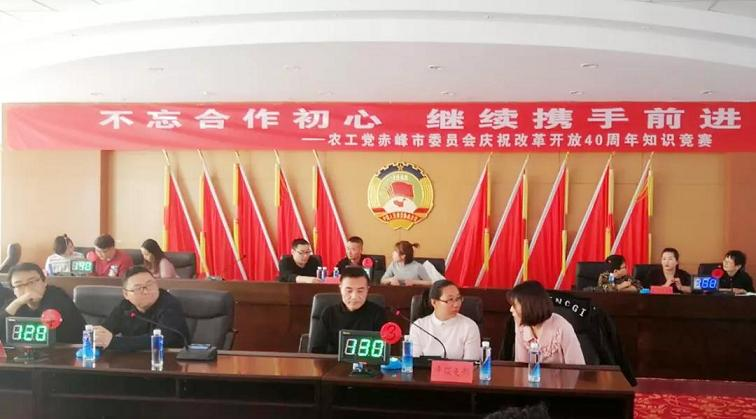
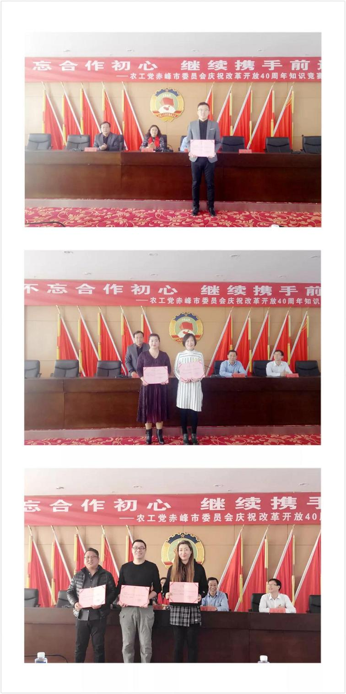

2019年1月20日，农工党赤峰市委举行了《不忘合作初心，继续携手前进——庆祝改革开放40周年知识竞赛》。农工党赤峰学院委员会、市直卫生支部、市直文教支部、市直工程技术支部、松山区支部、红山区支部、元宝山卫生支部、元宝山科技支部、平煤支部共9个代表队参加比赛。

此次知识竞赛内容丰富，涉及习近平新时代中国特色社会主义思想、农工党党史、改革开放、多党合作等相关知识。各参赛队认真组织，准备充分，比赛中积极答题、勇争先锋，气氛既严肃又热烈，充分展示了农工党赤峰市广大党员奋勇拼搏、积极进取、昂扬向上的精神风貌。

经过必答题、抢答题、风险题、附加题四轮激烈角逐，农工党市直工程技术支部代表队荣获一等奖，市直卫生支部、元宝山卫生支部荣获二等奖，赤峰学院委员会、红山区支部、市直文教支部荣获三等奖。